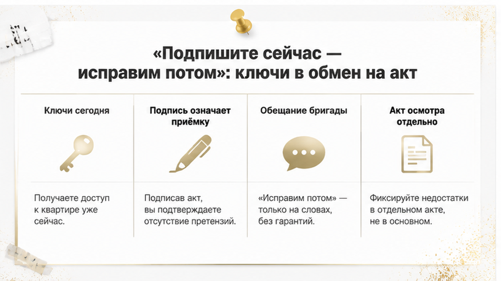
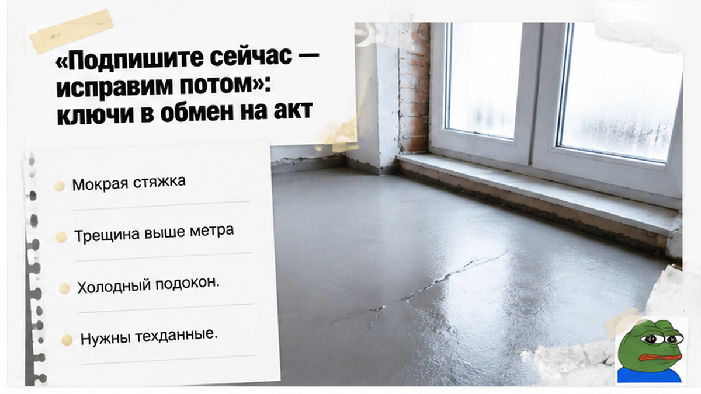
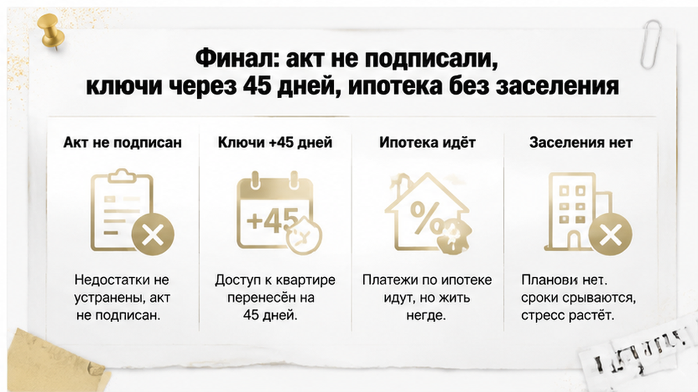
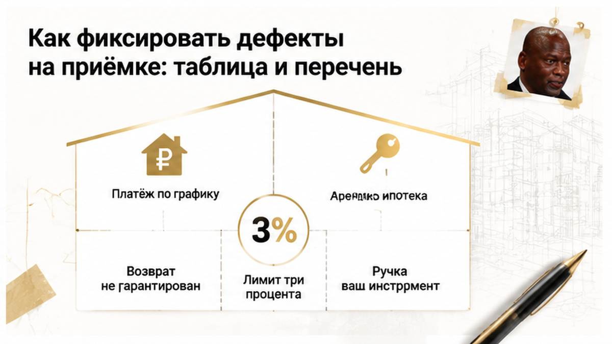

Ключи лежали на столе в переговорной — и остались лежать на столе. На приёмке новостройки в Тюмени семья нашла в дальней комнате мокрую стяжку, трещину в стене выше метра и подоконник, который был холоднее воздуха в квартире. Представитель застройщика предложил вариант, звучащий почти по-дружески: подписываете передаточный акт сегодня, недостатки устраняем потом, «в рабочем порядке». Семья не подписала — вписала дефекты в перечень, сняла фото и видео, забрала свой экземпляр с датой и подписями. Выдачу ключей после этого сдвинули на 45 дней, а ипотека продолжила списываться по графику — без заселения. Сюжет собирательный: я сложил его из типовых тюменских приёмок 2026 года, без имён, адреса ЖК, суммы и названия банка — это разбор механики, а не репортаж о конкретном деле.
Меня зовут Святослав Шакин, я риэлтор в Тюмени — проект The Риэлтор. Если у вас на неделе приёмка новостройки и вы не понимаете, что можно подписывать, а что нет, — напишите до визита, разберём договор и порядок передачи.
Telegram: t.me/Tyumen_Rieltor · MAX: max.ru/id561413315447_biz
Начиналось всё скучно и правильно: осмотр по кругу, замеры, чек-лист по отделке от застройщика. Потом ладонь легла на стяжку в дальней комнате — влажно. У стены пятно темнее, чем в центре.
Трещина шла по стене выше метра, и спор о ней начался мгновенно: «косметика» — «не косметика». Подоконник в спальне был ощутимо холоднее всего остального в квартире, а это уже разговор не про обои, а про теплозащиту узла.
И вот первое, что я всегда говорю вслух, пока никто не взял ручку: ни один из этих трёх дефектов сам по себе не даёт автоматического права не подписывать. Существенность подтверждают техническими данными и заключением специалиста — не ощущением ладони и не фразой «косметика».
Правовая рамка при этом простая. По ч. 1 ст. 7 214-ФЗ застройщик обязан передать объект, который соответствует проектной документации, градостроительным нормам и требованиям к результату работ. Спор идёт не о вкусе покупателя, а о соответствии. Поэтому язык фиксации на приёмке важнее, чем громкость голоса в переговорной.
Фон в городе в те же дни был плотным: на Dzen выходил материал о приёмке новостройки в Тюмени с прямым предупреждением не подписывать акт за десять минут, в СМИ — поручение СК доложить по делу о затоплении новостройки. Это контекст качества стройки в городе, не подтверждение нашего casus: претензии к конкретным ЖК я сюда не переношу.


Самая дорогая часть приёмки — не осмотр. Она начинается за столом, когда все устали и хотят домой.
«Дефекты мы записали, бригада зайдёт, ключи забирайте сегодня». Формула звучит удобно — и в ней спрятана подмена: подпись и ремонт лежат в разных плоскостях. Подпись фиксирует, что объект принят. Обещание бригады не фиксирует ничего.
Закон на этой развилке даёт покупателю прямой инструмент. До подписания передаточного акта можно потребовать оформить акт о несоответствии объекта и не подписывать до устранения нарушений — это ч. 5 ст. 8 214-ФЗ. При несущественных недостатках квартиру обычно принимают, но дефекты должны попасть в передаточный акт, акт осмотра или дефектную ведомость с обязательством застройщика устранить. При существенных нарушениях отказ от подписи возможен — и тогда ключи остаются у застройщика до устранения либо до согласования задокументированного порядка передачи.
Здесь же живёт ошибка, которая потом стоит месяцев переписки. Акт осмотра и передаточный акт — разные документы с разными последствиями, и первый не заменяет второй. Подписанный «без замечаний» акт, за которым стоит только устное «исправим», разворачивает доказывание против покупателя: застройщик спокойно скажет, что дефекты появились после передачи. Механика ровно та же, что в истории, где скидку и обещания дали до подписи, а риск в квартире прятали: сначала подпись, потом «мы такого не говорили».
И то, что пропускают почти на каждой приёмке: кто именно сидит напротив. Я прошу доверенность представителя и сверяю, вправе ли он вообще подписывать акты и согласовывать сроки. Без этого «мы же договорились» рассыпается на первом юристе.

Чем всё закончилось. Передаточный акт семья не подписала.
Дефекты внесли в перечень с конкретикой: помещение, место, вид, обстоятельства обнаружения. Сделали фото и видео с привязкой к квартире. Оформили минимум два экземпляра — свой забрали, с датой, подписями и перечнем приложений. После этого застройщик объявил новый срок выдачи ключей: 45 дней.
Деталь, которую трактуют неверно чаще всего: 45 дней — это предложение застройщика в конкретных переговорах, а не универсальный срок из закона. Пока он не зафиксирован в акте осмотра, соглашении или письменной переписке, он существует только на словах. Передача при этом юридически не завершена: без передаточного акта квартира не передана, ключи законно остаются у застройщика.
А ипотека идёт. Отказ от подписи и ожидание ремонта не приостанавливают кредитный договор — платежи списываются по графику банка. Получается вилка, знакомая многим тюменским покупателям: платёж есть, аренда есть, заселения нет. Возмещение аренды с застройщика — отдельное требование, его нужно заявлять и обосновывать, и оно не гарантировано; кредитные каникулы или реструктуризация возможны только через банк и по условиям договора.
Похожую нагрузку я разбирал в истории, где ключи от новостройки в Тюмени перенесли на год, а деньги на эскроу заморозили. Там причиной был перенос сдачи, здесь — сорванная передача на самой приёмке. Итог для семейного бюджета выглядит одинаково.
Первый вопрос, который мне задают после такой истории: а вообще имели право не подписывать? Имели. Но не по любому поводу — и вот это место люди проскакивают.
Часть 1 статьи 7 214-ФЗ: застройщик обязан передать объект, который соответствует проектной документации, градостроительным нормам и требованиям к результату работ. Не «нравится — не нравится», а соответствует или нет. Если не соответствует, до подписания передаточного акта покупатель вправе потребовать оформить акт о несоответствии и не ставить подпись, пока нарушения не устранены — часть 5 статьи 8 того же закона.
Дальше граница, которую охотно стирают обе стороны. При несущественных недостатках квартиру обычно принимают. Но не молча: дефекты идут в передаточный акт, акт осмотра или дефектную ведомость — с обязательством застройщика устранить. Отказ от подписи — инструмент для существенных нарушений.
И главное. Наличие дефекта само по себе не делает его существенным. Оценка — про то, как он влияет на использование квартиры, устраним ли он и что говорят технические документы. Мокрая стяжка, трещина, холодный подоконник — каждый из этих трёх пунктов требует технических данных или заключения специалиста. Ладонь на подоконнике — не документ. Фраза представителя «да это косметика» — тоже не документ.
Поэтому на приёмке я не спорю о словах. Я прошу записать: помещение, место, вид, размер, обстоятельства. Спор о существенности будет позже, и выигрывает его тот, у кого дефект описан.
Обратная ошибка стоит дороже отказа. Подписали акт без замечаний под устное «исправим» — и теперь доказывать придётся вам: что дефект был до передачи, а не появился после. Механика та же, что в истории, где расписку на квартиру написали, а денег на счёте не оказалось. Пока подпись не поставлена, вы сторона переговоров. После подписи — сторона, которая что-то доказывает.
С 1 января 2026 года правила приёмки сдвинулись сильнее, чем видно по заголовкам.
Раньше специалист профильной СРО подключался в основном тогда, когда шёл спор о существенных нарушениях. Теперь он требуется при любых разногласиях по перечню недостатков — подпункт «в» пункта 1(1) ПП РФ № 2380 в редакции ПП № 2226. То есть спорите вы не о том, обрушится ли стена, а о формулировке пункта в ведомости — техническая фиксация всё равно становится частью процедуры. Специалиста берут не по объявлению, а из реестра НОСТРОЙ или НОПРИЗ.
Сроки по ПП РФ № 2380: осмотр со специалистом — в течение 5 рабочих дней, не ранее чем через 3 после согласования; акт застройщику — в течение 3 рабочих дней; устранение — до 60 календарных дней. Расходы на специалиста могут возместить, если акт подтвердил нарушения.
Ещё одно изменение работает прямо в вашу пользу: с 1 января 2026 застройщик не может оформить односторонний акт приёмки, если покупатель не явился на осмотр (ПП № 2226). Раньше неявка была подарком для стройки — квартира считалась переданной, а вы узнавали об этом из письма. Теперь нет. Но и вывод обратный тому, который делают в чатах: игнорировать назначенный осмотр всё равно нельзя. Ваша сила — в участии и в бумаге, а не в молчании.
И последнее, что путают почти все. Акт осмотра и дефектная ведомость — это не передаточный акт. Разные документы, разные последствия: первый фиксирует претензии, второй закрывает передачу. Заодно проверьте того, кто подписывает со стороны застройщика: доверенность, срок, объём полномочий. В истории про то, как ипотеку одобрили, а регистрацию отменили из-за строки в ЕГРН, всё решила одна запись в документах. Здесь роль такой записи играет ваш экземпляр перечня недостатков.

Приёмка начинается не со стяжки. Она начинается с человека напротив: кто он, что у него в доверенности и вправе ли он вообще подписывать акты и согласовывать сроки. Дальше — язык. На приёмке выигрывает не тот, кто громче возмущается, а тот, кто пишет конкретику вместо оценок.
И отдельно — то, что путают чаще всего. Акт осмотра, дефектная ведомость и передаточный акт — три разных документа с тремя разными последствиями. Один не заменяет другой.
| Документ | Когда оформляется | Что подтверждает | Чего не даёт |
|---|---|---|---|
| Перечень недостатков (акт осмотра) | В день осмотра, до подписания передаточного акта | Что дефекты существовали до передачи и были предъявлены застройщику | Не передаёт квартиру и сам по себе не обязывает выдать ключи |
| Акт осмотра со специалистом СРО | При разногласиях по перечню недостатков — по процедуре ПП РФ № 2380 | Техническую оценку недостатков лицом из реестра НОСТРОЙ или НОПРИЗ | Не гарантирует, что застройщик согласится с выводами без спора |
| Передаточный акт с замечаниями | Когда недостатки несущественные и вы принимаете квартиру | Факт передачи и обязательство застройщика устранить перечисленное | Не отменяет обязанности собственника и платежи по ипотеке |
| Передаточный акт без замечаний | Когда претензий нет вообще | Что объект принят в том виде, какой он есть на дату подписи | Осложняет доказывание: застройщик вправе говорить, что дефекты появились после передачи |
Именно здесь ломается большинство историй, которые приходят ко мне через месяц: подписали «без замечаний» под устное «исправим» — и теперь доказывают они, а не застройщик.
Если застройщик обещает всё исправить после подписи — вы подпишете акт или уйдёте без ключей? Напишите в комментариях, что выбрали бы вы: мне интересно, как тюменские покупатели делят это решение.
Если приёмка на неделе и вы хотите, чтобы кто-то трезво прочитал ваш ДДУ и порядок передачи до осмотра, — напишите мне в Telegram или в MAX. Разберём документы до того, как вам протянут ручку.
Самое неприятное здесь: деньги идут независимо от того, стоите вы с ключами или без. Ипотечный договор не приостанавливается оттого, что вы отказались подписать акт и ждёте устранения дефектов, — платежи списываются по графику банка. Кредитные каникулы или реструктуризация возможны только через обращение в банк и только на условиях вашего договора; это не автоматическое право и не следствие спора со стройкой. Если при этом вы снимаете жильё, нагрузка двойная — и ровно из-за этой математики люди подписывают что угодно.
Возмещение аренды с застройщика — отдельное требование, которое нужно заявлять и обосновывать, и оно не гарантировано. С деньгами вообще всё аккуратнее, чем кажется: с 1 января 2025 действует лимит 3% от цены ДДУ на совокупные требования по отделке, окнам и сантехнике (ч. 4 ст. 10 214-ФЗ), и в этот лимит не входит неустойка за просрочку передачи по ст. 6. Плюс ПП РФ № 2227: по требованиям о неустойке, штрафах и процентах, предъявленным до 1 января 2026, исполнение отсрочено до 31 декабря 2026 — право могут признать, а деньги сдвинуть. Похожую нагрузку я разбирал там, где ключи от новостройки в Тюмени перенесли на год, а деньги на эскроу заморозили.
С 1 января 2026 денежные требования можно заявлять сразу при существенных нарушениях — без ожидания полных 60 дней. Гарантия по ДДУ после 1 сентября 2024 — минимум 3 года на конструктив и 1 год на отделку.
Вывод из этой истории не в том, что новостройки опасны. Новостройки в Тюмени покупают каждый день — когда приходят с распечатанным ДДУ и не путают передаточный акт с актом осмотра. Ручка на приёмке — ваш инструмент: вы решаете, что и когда подписать.
Самое сильное действие делается до брони и до аванса: прочитать порядок передачи, отделку по проекту и свои права по срокам. Я регулярно останавливаю клиентов на этом этапе — и почти всегда после разбора условия правятся или человек идёт в другой проект осознанно.
Материал проверен: Святослав Шакин, личный риэлтор в Тюмени. Ориентир для покупателя, не индивидуальная юридическая консультация.